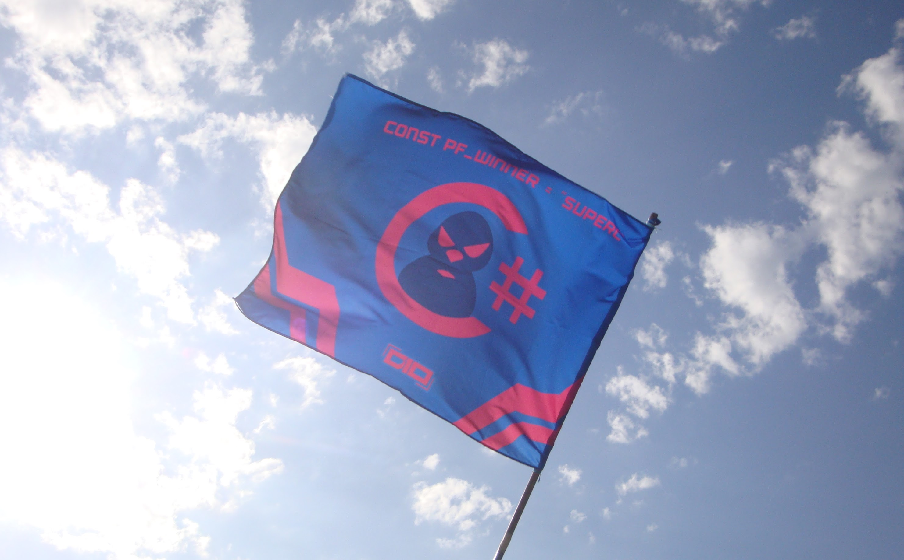
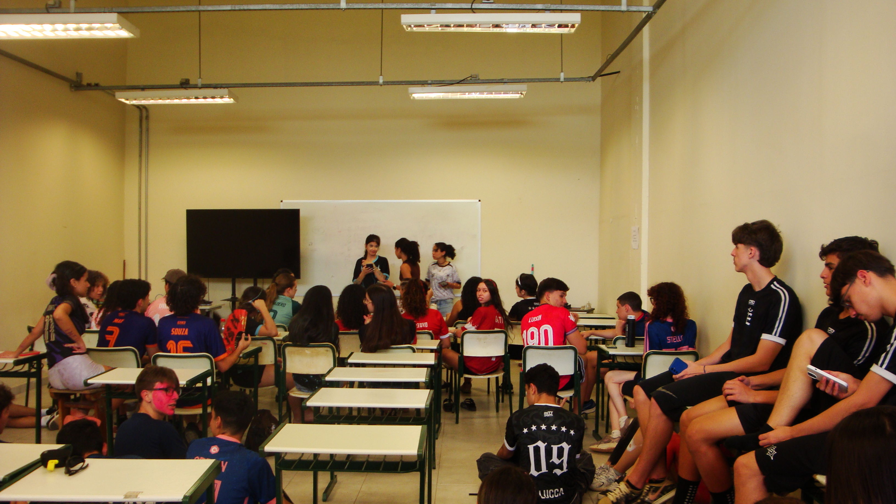
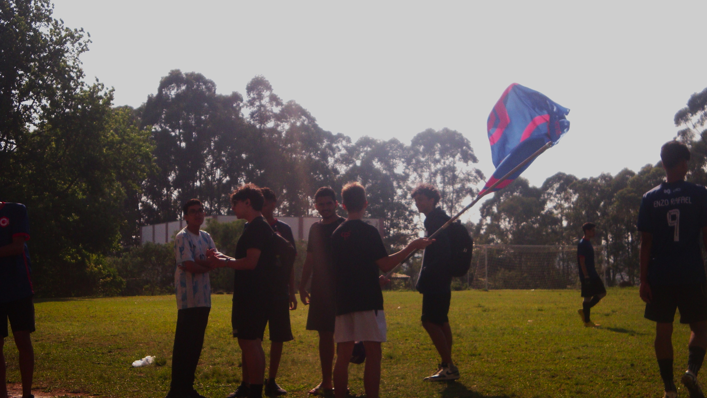

Paulo Freire foi um importante educador e filósofo brasileiro, conhecido por criar um método de alfabetização
que valorizava o diálogo e a consciência crítica. Ele acreditava que a educação devia libertar as pessoas e
ajudá-las a entender e transformar a realidade em que vivem.
Saiba mais sobre ele!
A Semana Paulo Freire é uma iniciativa promovida anualmente pelo Centro Paula Souza nas Escolas Técnicas Estaduais (Etecs) de São Paulo. Realizada em homenagem ao educador brasileiro Paulo Freire, a semana busca valorizar sua contribuição para uma educação humanizadora, crítica e libertadora.
Durante esse período, as escolas promovem ações solidárias, como campanhas de doação, além de gincanas esportivas e outras atividades que incentivam a cooperação e o envolvimento da comunidade escolar.
A gincana da Semana Paulo Freire é dividida em duas partes: uma campanha de doações, em que cada curso arrecada alimentos, produtos de higiene básica e roupas que valem pontos, e as competições esportivas, nas quais cada modalidade soma pontuações de acordo com a colocação até o quarto lugar. São disputados esportes, brincadeiras e e-sports(jogos virtuais). A soma dos pontos das doações e dos esportes define a classificação final, unindo solidariedade e espírito esportivo em uma mesma atividade. Verifique o resultado da PF 2025 na EtecVAV aqui!